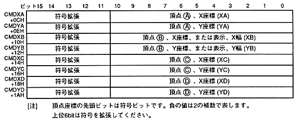

Table 6.6 Correspondence between commands and CMDXA to CMDYD
Command | CMDXA | CMDXB | CMDXC | CMDXD | |
Standard sprite drawing command | Vertex (A) | - | - | - | |
Rectangle sprite drawing command | Specify two coordinates | Vertex (A) | − | Vertex (C ) | − |
Fixed point specification | Fixed point coordinates | Display width | - | - | |
Transform sprite drawing command | Vertex (A) | Vertex (B) | Vertex (C) | Vertex (D) | |
Polygon drawing command | Vertex (A) | Vertex (B) | Vertex (C) | Vertex (D) | |
Polyline drawing command | Vertex (A) | Vertex (B) | Vertex (C) | Vertex (D) | |
Line drawing command | Vertex (A) | Vertex (B) | - | - | |
User clipping coordinate setting command | Upper left coordinate | − | bottom right coordinates | − | |
System clipping coordinate setting command | − | − | bottom right coordinates | − | |
Relative coordinate setting command | Relative coordinate | − | − | ||